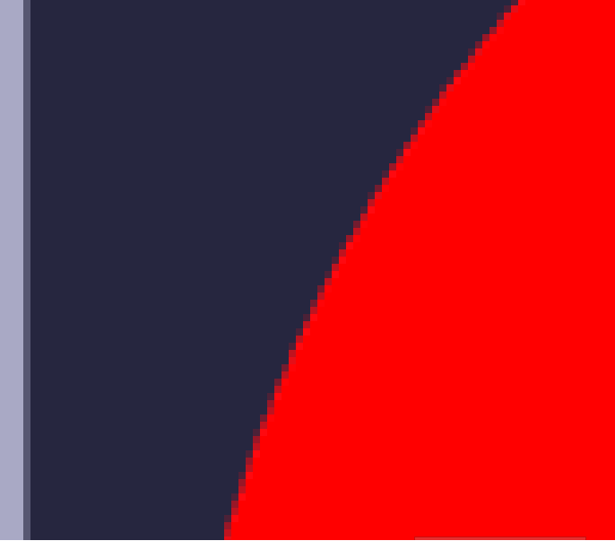
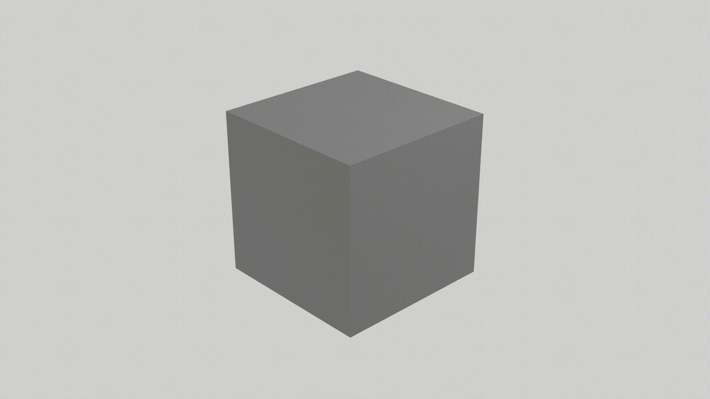
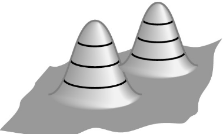
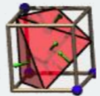
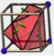

Problem 1
List two different uses of an interpolation method in computer graphics. Explain how each works using a
figure to support your explanation.
-
Anti-aliasing - Interpolation methods can be used to smooth out jagged edges. This is done by sampling multiple pixels along the edge of an object and using interpolation to calculate the color of each pixel, resulting in a smoother, more realistic edge.

-
Keyframe Interpolation - Keyframes are specific points in an animation that define the starting and ending transformations of an object. Keyframe interpolation calculates the intermediate frames between these keyframes, creating a seamless and natural movement.

Problem 2
Given a pose of the Yanshee robot, propose a constructive method for computing a quantified stability
of the robot. You should include terms like center of mass (CoM) and base of support (BoS) as shown
in Figure 1. As a starting point, consider how you could compute the CoM if given the angles of the
robot's joints.
-
One method for computing a quantified stability of the Yanshee robot would be to first calculate the center of mass (CoM) of the robot. This can be done by measuring the angles of the robot's joints and using these measurements to determine the position of each individual body part. The CoM can then be calculated by taking the weighted average of the positions of each body part, with the weighting determined by the mass of each part.
Once the CoM has been calculated, the next step would be to determine the robot's base of support (BoS) and center of pressure (CoP). The BoS is the area of the ground that the robot is currently supported on, and the CoP is the point on the BoS where the robot's weight is applied.
To measure the stability of the robot, we can then calculate the distances between the CoM and the BoS, and between the CoM and the CoP. We can also calculate the time it would take for the CoM to reach the edge of the BoS under the velocity of the CoM (CoMv).
These measures can then be used to determine the stability of the robot, with larger distances and longer times indicating a more stable posture, and smaller distances and shorter times indicating a less stable posture
Problem 3
-
Describe the Markov property in terms of its application in texture synthesis.
-
The Markov property is a mathematical concept that states that the future state of a system can be reasonably determined by its current state. In the context of texture synthesis, this means that the appearance of a pixel in an image can be predicted based on the values of the pixels that are nearby. This property is often used in algorithms that generate new textures by sampling from existing images, using the values of nearby pixels(or patch/block) and a probabalistic model to determine the value of each new pixel in the generated texture. As a result, algorithms built on this concept can produce results that are similar to the original sample texture, but with some degree of randomness and variation.
-
What are the pros and cons of relying on this property for texture synthesis?
Pros:
- Algorithms based on the Markov property are relatively simple.
- It is capable of producing passable results with some degree of variation, allowing it to avoid generationg textures that suffer from "sameness".
- Since the algorithm only relies on "present" information, it's able to generate new textures without the need of extensive training data or complex models.
Cons:
- Because the conventional algorithm operates at the pixel scale, it can be quite slow for larger inputs. However, a reasonable solution to this con is to operate at a block/patch level instead.
Problem 4
-
What is a near-regular texture (NRT)?
-
A near-regular texture (NRT) is a type of texture in which the elements of the texture are similar in size and shape, but not exactly identical. This type of texture is often found in natural materials such as rocks and crystals, as well as in some man-made materials such as ceramics and fabrics.
-
How do NRTs differ from other types of textures?
-
NRTs differ from regular textures in that the elements of an NRT are similar but not exactly identical, while the elements of a regular texture are all exactly the same size and shape.
-
How can you ensure the output of a texture synthesis algorithm is faithful to an NRT input image?
-
We can use the synthesized deformation field's parameterized approximation of geometric regularity to ensure faithfulness by multiplying its pixel-wise magnitude by a gain factor. When the gain is equal to 1, the deformation field is faithful to the target. When the gain is not equal to 1, then the deformation is not faithful to the target.
Problem 5
-
What is an isosurface represented by a 3D (or isocontour in 2D) implicit function?
-
An isosurface is a surface which is represented by an implicit function, meaning that the coordinates of all the points that make up the surface in 3D/2D are defined by a mathematical equation. The equation is set up such that the surface is formed by all points in space where the scalar value is equal to a specific constant.
-
Provide an example with a figure
-
One common example of an isosurface is a contour map, which shows the elevation of a landscape at various points. In this case, the isosurface would represent the points in the landscape with the same elevation.
A contour map with contour lines at 100, 200, and 300 feet above sea level would have three isosurfaces representing the points in the landscape with an elevation of 100 feet, 200 feet, and 300 feet, respectively.

Problem 6
-
Describe the marching squares/cubes method for contour surface representation.
-
The marching squares/cubes method is a technique used to extract isosurfaces from a three-dimensional scalar field. The method works by dividing the scalar field into a grid of small squares or cubes, and then determining the contours of the isosurface that pass through each square or cube. This is done by identifying the vertices of the square or cube that have values above or below the desired isosurface value, and then using interpolation to estimate the position of the contour on the edges of the square or cube. The resulting contour lines can then be combined to form a continuous representation of the isosurface.
-
Which two of the following configurations in Figure 2 are redundant? Explain how you found your answer.
-
The far right on the middle row and the far right on the bottom row are redundant as they are simple reflections of eachother, meaning they are topologically equivalent.

